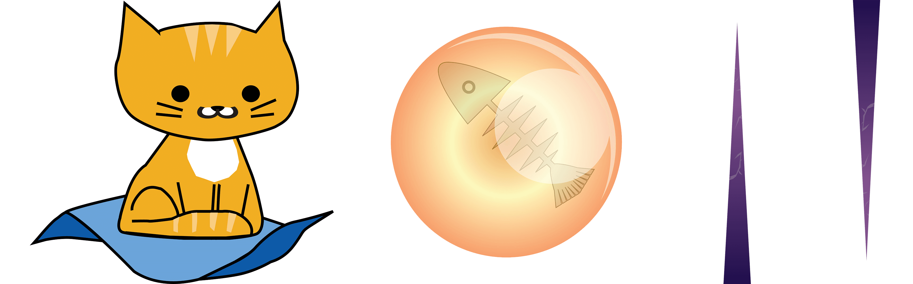
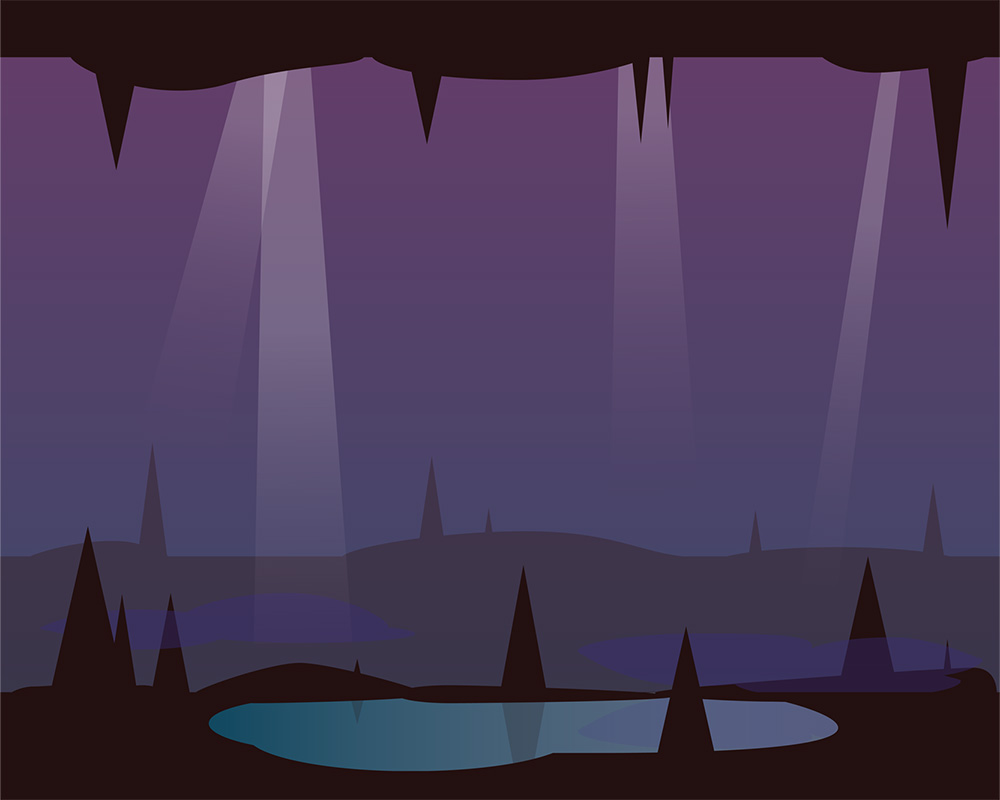
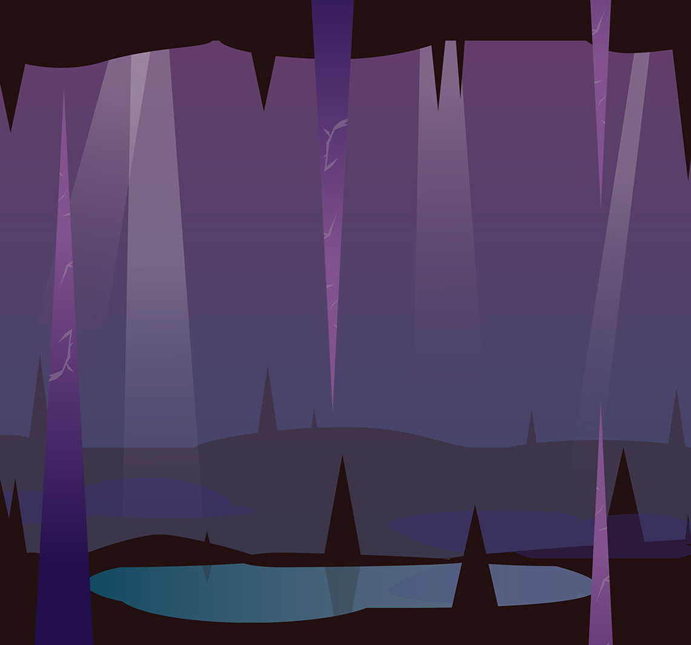
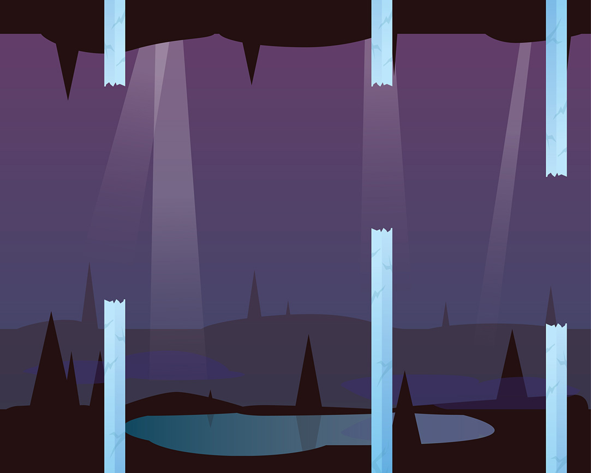
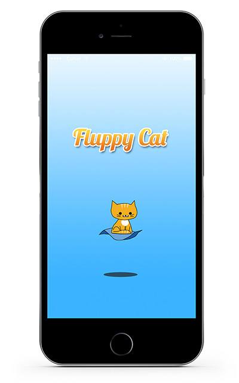

Fluppy Cat Mobile Game
An iOS game of endurance

Trang Tran

About Fluppy Cat
My boyfriend and I came up with a fun way to combine our passions in design, code, and cats. After spending a whole week experimenting with addicting mobile games, we were inspired to make our own. We were particularly influenced by Flappy Bird and Doodle Jump because we enjoyed the simple gameplay and whimsical visuals. I've been itching to work on some visual designs for mobile.
I was the visual and UX designer for this app. We worked in a team of two, with my boyfriend being the engineer.
Creating a Game With a Low Barrier to Entry
We wanted to make a game that had a lot of replay value and was easy to get into. The game was going to be a variation of Flappy Bird, a side scroller where the player has to tap on the screen repeatedly to keep the sprite hovering. The main character of the game would be an orange cat as a tribute to my late tabby, Pibby. It was a nonsensical idea but we were going to make Pibby fly on a magic blanket, navigating between stalactites and stalagmites to collect fishbone orbs.
Using Trello, we set up a punchlist of things we needed from each other. The look and feel of the game relied heavily on the art style and colors in which I managed. We were building it out for the iPhone so I had to follow specific iOS guidelines for different screen sizes. For every asset, I would need to create 3 versions: 1x, 2x, and 3x.
The following assets were needed:
Creating the Visuals
I did some initial sketches of the assets on the whiteboard. I then used Photoshop and Illustrator to create the high fidelity versions.
Protagonist sprite (Pibby), magic fish orbs, and stalactite/stalagmites.
The image I created which would repeatedly scroll to generate the backdrop.
Testing Fluppy Cat With Various People
Using Xcode, my boyfriend developed the game using the assets we put together. We even got the sound bit of the chime whenever Pibby collects a fish orb. We installed it on both our iPhones (6 and 7S) to test it out. There was also an incredible lag during the gameplay. It turns out that the the lag was caused by the spike shapes. Triangles are difficult to generate and tend to take longer to load. I realized that it was also difficult to see the sharp points of the the tapered columns, making the game extremely hard. It was back to the drawing board to come up with a new idea.
The spikes were hard to see and they generated a delay when playing.
Reiterating
To optimize the game performance and make the obstacles visible, I changed the spikes into crystals. It made just as much sense as the stalactites because crystals also form in caves. With their color and shape, it brought a nice contrast against the purple background. Thanks to their rectangular shape, there was no more lag.
The improvement. More contrast and no lag.
More Testing and More Iterating
We further tested the game with my boyfriend's coworkers. While there were no longer any delays in generating the pillars, people found the game to be difficult still. They claimed that Pibby was too big and had difficulty moving him between the pillar openings. My boyfriend further changed the rate at which the pillars were generated, while I made Pibby smaller.

The Takeaway
This was the first iOS-specific piece that I designed. It was a fun project that allowed me to learn more about the requirements when designing for the iPhone. It also increased my affinity for wanting to work on more mobile apps. Something I learned was that as a designer and user, I get tunnel-vision with the things I create. It's not until you allow a fresh pair of eyes to review your products to see if there are some issues. In this case, having other people play Fluppy Cat helped me realize that the game was initially a bit too difficult.
